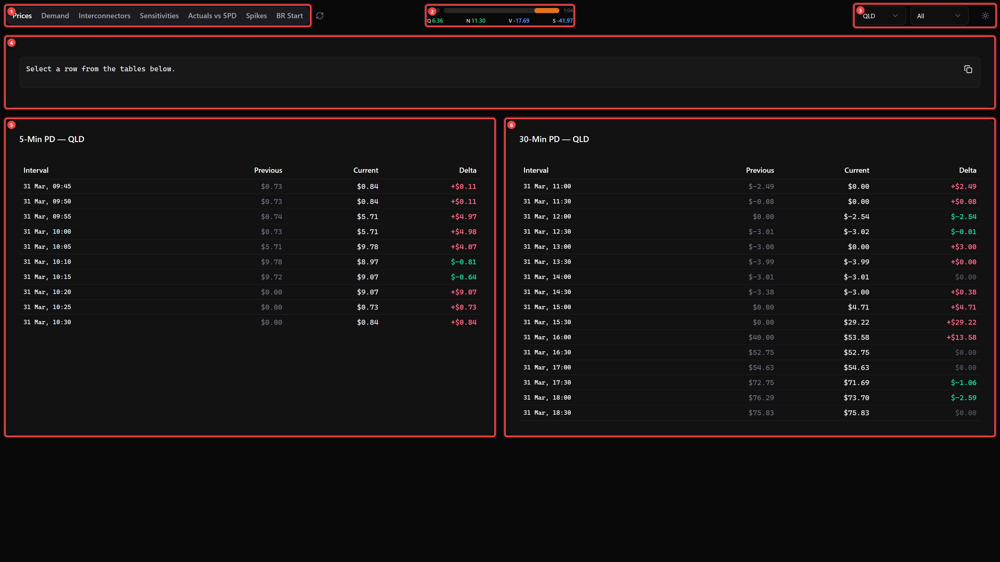
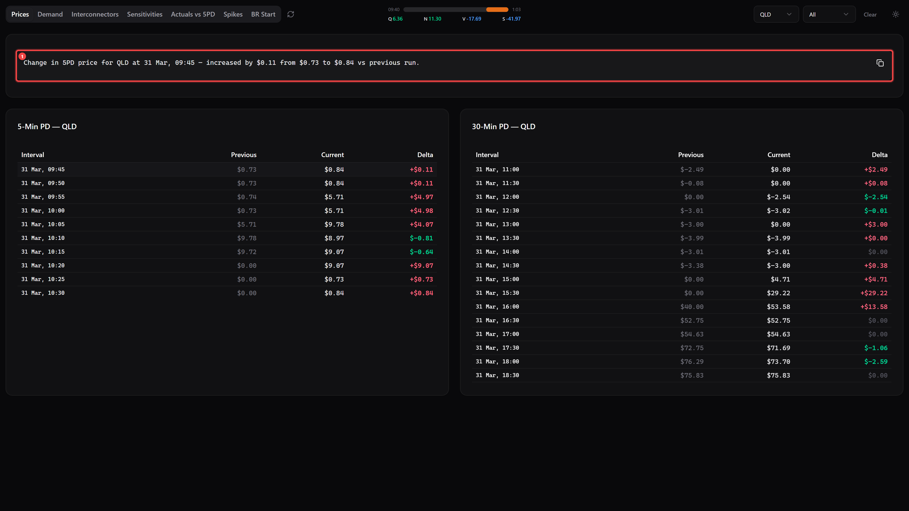
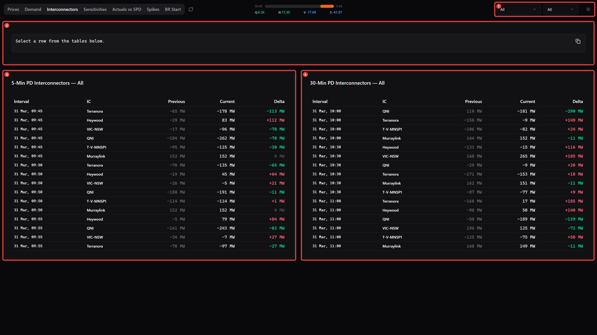
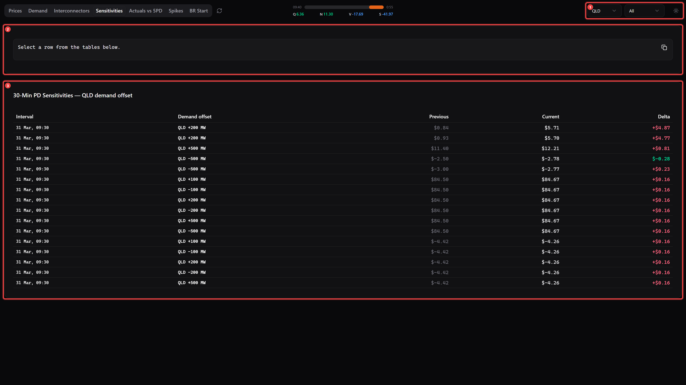
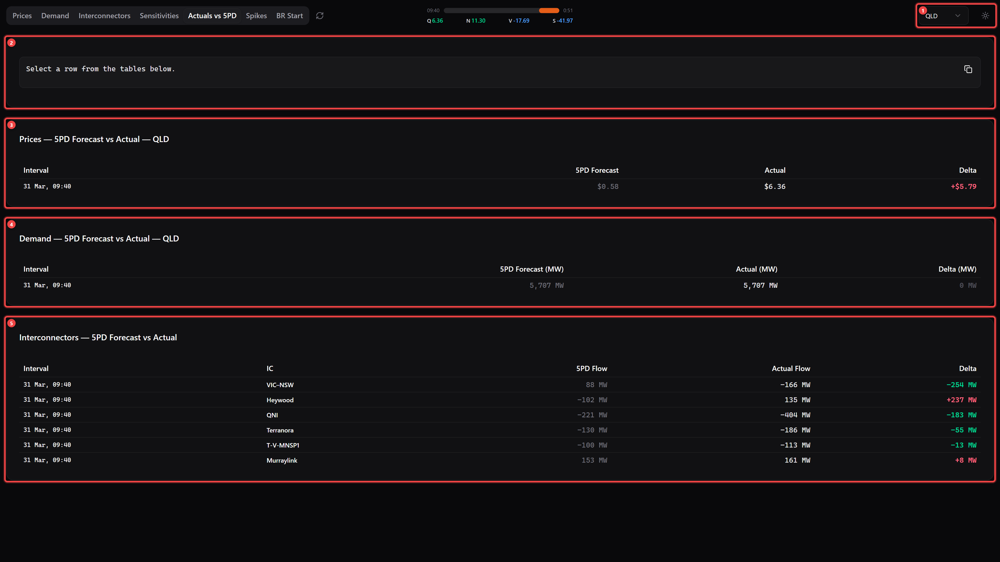
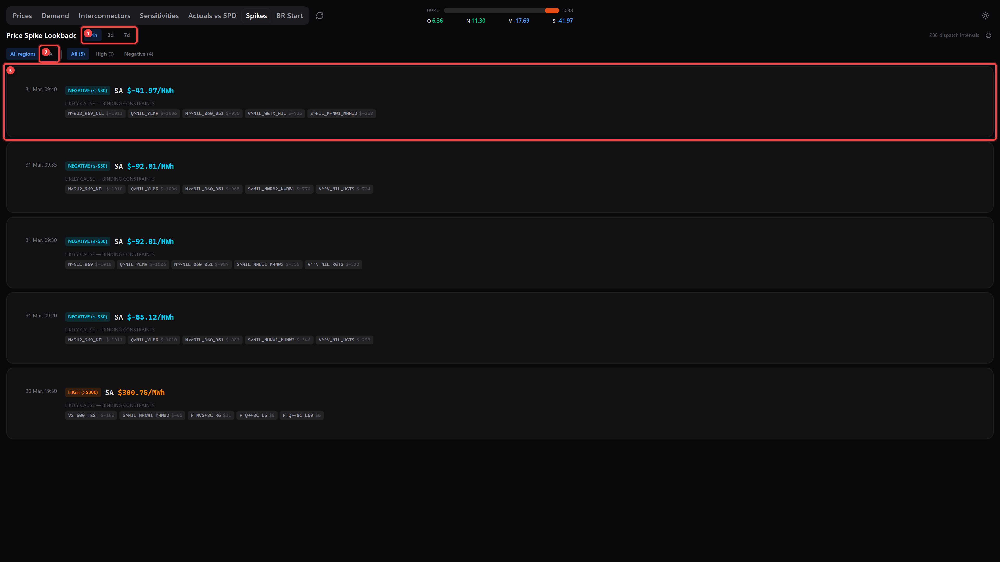
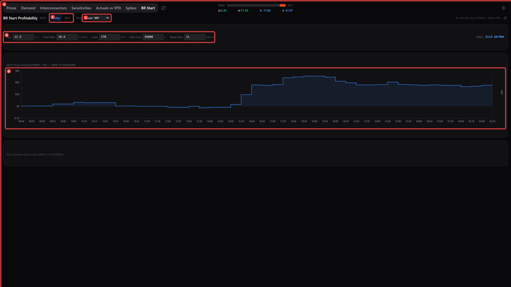

NEM Dashboard — https://nem-rebids-beta.vercel.app/
Real-time pre-dispatch change tracker for the NEM. Compares the latest two AEMO runs (5-min and 30-min pre-dispatch) and shows what moved — prices, demand, interconnectors, and sensitivities.
Data auto-refreshes every ~30 seconds. No login, VPN, or software install required.
Navigate to https://nem-rebids-beta.vercel.app/ in any modern browser (Chrome, Edge, Firefox). No login or installation needed.
The screenshot below shows the default view (Prices tab). The Demand and Sensitivities tabs share this same split-panel layout.

| Ref | Area | Description |
|---|---|---|
| 1a | Tab Navigation | Switch between views: Prices, Demand, Interconnectors, Sensitivities, Actuals vs 5PD, Spikes, BR Start. The refresh button (circular arrow) beside the tabs forces an immediate update — hover to see last refresh time. |
| 1b | Interval Countdown + Prices | Live countdown bar to the next 5-minute NEM dispatch interval. Colour shifts green → yellow → orange → red as time runs out. Displays current dispatch prices for each region: Q (QLD), N (NSW), V (VIC), S (SA). All times in AEST. |
| 1c | Filters & Theme | Region dropdown — filter by QLD, NSW, VIC, or SA. Direction dropdown — show only increases, decreases, or all. Theme toggle (sun/moon icon) — switch dark/light mode. |
| 1d | Rebid Reason Generator | Click any data row to auto-generate a rebid reason here. Click the copy button to copy to clipboard for emails or AEMO submissions. |
| 1e | 5-Min Pre-Dispatch (5PD) | Price changes from the latest vs previous P5MIN AEMO run. Covers the next ~60 minutes in 5-minute intervals. Columns: Interval | Previous | Current | Delta. |
| 1f | 30-Min Pre-Dispatch (30PD) | Price changes from the latest vs previous PREDISPATCH run. Covers the remainder of the trading day in 30-minute intervals. |
Note: The Demand tab has an identical layout but displays MW instead of $. The Sensitivities tab shows how prices would change under different demand offset scenarios (e.g., QLD +100 MW, +500 MW). Both work the same way.
| Delta Direction | Colour |
|---|---|
| Increase (positive delta) | Red / Rose |
| Decrease (negative delta) | Green / Emerald |
| Price Range | Colour |
|---|---|
| Below $0 (negative) | Blue |
| $0 – $50 | Green |
| $50 – $100 | Yellow |
| $100 – $300 | Orange |
| Above $300 | Red |
Click any data row to select it. A human-readable rebid reason is auto-generated in the text area at the top of the page.

| Ref | Description |
|---|---|
| 2a | The auto-generated rebid reason text. Example: "Change in 5PD price for QLD at 31 Mar, 09:30 — increased by $0.09 from $0.75 to $0.84 vs previous run." Click the copy button (clipboard icon, top-right) to copy to clipboard. Paste into emails, AEMO rebid submissions, or chat. Click the row again or press Clear to deselect. |
Tip: This works on all data tabs (Prices, Demand, Interconnectors, Sensitivities) — the generated reason adapts to the data type.
Shows MW power flow changes between NEM regions via high-voltage transmission links.

| Ref | Area | Description |
|---|---|---|
| 3a | IC Selector / Direction / Theme | The region dropdown is replaced by an interconnector dropdown — filter by a specific IC or view all. Direction filter and theme toggle also available. |
| 3b | Rebid Reason | Same as other tabs — click a row to generate a reason. |
| 3c | 5PD Interconnector Flows | Shows 5-minute pre-dispatch MW flow changes for each interconnector. |
| 3d | 30PD Interconnector Flows | Shows 30-minute pre-dispatch MW flow changes. |
| Name | ID | Regions |
|---|---|---|
| QNI | NSW1-QLD1 | NSW ↔ QLD |
| Terranora | N-Q-MNSP1 | NSW ↔ QLD (alternate) |
| VIC–NSW | VIC1-NSW1 | VIC ↔ NSW |
| Heywood | V-SA | VIC ↔ SA |
| Murraylink | V-S-MNSP1 | VIC ↔ SA (alternate) |
Shows how prices would change under different demand offset scenarios (e.g., QLD +100 MW, -200 MW, +500 MW). Only shows 30-minute pre-dispatch data.

| Ref | Area | Description |
|---|---|---|
| 1 | Filters | Region dropdown, direction filter, and theme toggle — same as other tabs. |
| 2 | Rebid Reason | Click a row to generate a sensitivity-specific rebid reason. |
| 3 | Sensitivity Data | Shows 30PD price changes for each demand offset scenario. Columns: Interval | Demand Offset | Previous | Current | Delta. Use this to understand price elasticity — how sensitive prices are to demand changes in each region. |
Compares what the 5-minute pre-dispatch forecast against what actually happened in dispatch.

| Ref | Area | Description |
|---|---|---|
| 4a | Region Filter | Filter by region. No direction filter on this tab. |
| 4b+ | Data Sections | Three sub-sections showing forecast vs actual for: Prices ($/MWh), Demand (MW), and Interconnectors (MW). Columns: Interval | 5PD Forecast | Actual | Delta. |
Use this to assess forecast accuracy and identify when pre-dispatch is systematically over- or under-forecasting.
Tracks price spike events with historical lookback and root-cause analysis via binding constraints.

| Ref | Element | Description |
|---|---|---|
| 5a | Time Range | Select the lookback period: 24h, 3d (3 days), or 7d (7 days). |
| 5b | Region Filter | Filter spikes by region: All regions, QLD, NSW, VIC, or SA. Also shows severity filter buttons (All, High, Negative). |
| 5c | Spike Cards | Each card shows one spike event: • Timestamp — date and time (AEST) • Severity badge — colour-coded • Region and price ($/MWh) • Binding constraints — the network constraints causing the spike, with their marginal value ($/MWh) |
| Severity | Threshold | Badge Colour |
|---|---|---|
| EXTREME | > $1,000/MWh | Red |
| HIGH | > $300/MWh | Orange |
| NEGATIVE | ≤ -$30/MWh | Cyan |
Calculates whether it is profitable to start a generator given current and forecast prices.

| Ref | Element | Description |
|---|---|---|
| 6a | Title & Region | Shows "BR Start Profitability" and the region (e.g., QLD1). |
| 6b | Trading Day Toggle | Switch between Today (current trading day) and D+1 (day-ahead). |
| 6c | Price Scenario | Select price scenario: Base RRP (5-min + 30-min combined) or sensitivity scenarios (e.g., QLD +100 MW, +500 MW). |
| 6d | Generator Parameters | Configure your generator's economics: • Gas — Fuel cost ($/GJ) • Heat Rate — Efficiency (GJ/MWh) • Load — Output capacity (MW) • Start Cost — Startup cost ($) • Ramp Rate — Ramp speed (MW/min) These settings are saved in your browser automatically. |
| 6e | SRMC | Calculated Short-Run Marginal Cost based on gas cost × heat rate. Prices above this line are profitable to generate. |
| 6f | Price Forecast Chart | Blue area shows RRP price forecast over the trading day. Dashed line is your SRMC. When profitable starts exist, an amber area shows the MW generation curve. |
| 6g | Results | If profitable start windows exist: interval-by-interval breakdown with optimal start/stop times, revenue, gas cost, margin, cumulative balance. Otherwise: "No profitable starts today". |
Why is this faster than Power BI?
- 30-second refresh vs Power BI's 30-minute minimum
- No infrastructure — no Oracle drivers, VPN, on-prem gateway, or BI licence
- Shareable — just send a URL, works in any browser
- Free — no per-user licence cost
Where does the data come from?
Directly from AEMO NEMWeb public reports. No database, VPN, or Oracle connection is involved.
Do I need to install anything?
No. Just open the URL in any modern browser.
Why are some intervals missing?
The dashboard only shows intervals where the value changed between the latest and previous AEMO run.
What does the delta column mean?
Delta = Current value minus Previous value. Positive = increased between runs; negative = decreased.
Can I verify the numbers?
Yes — cross-check against OpenElectricity or AEMO's own NEMWeb reports.